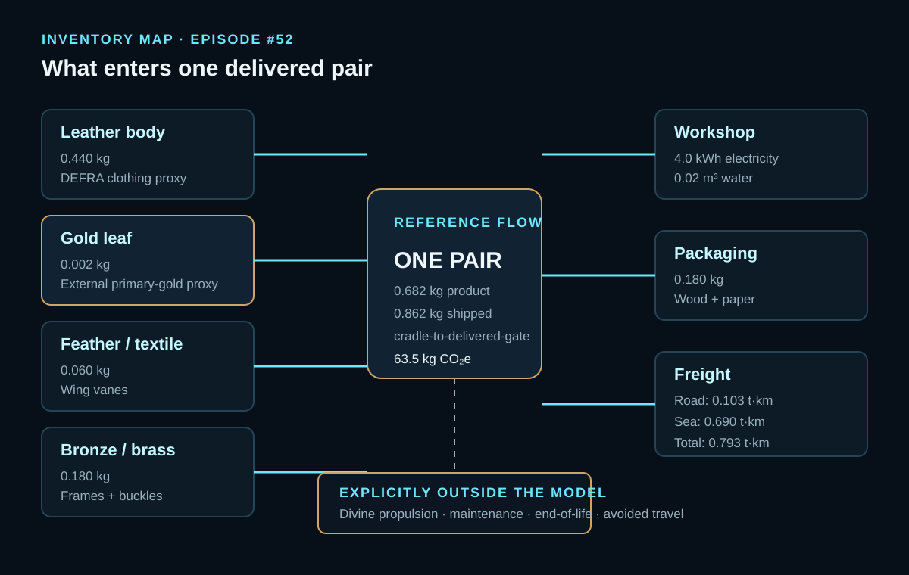
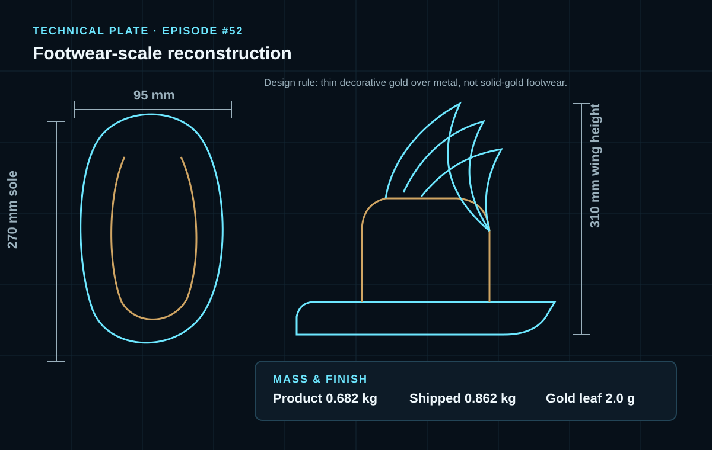
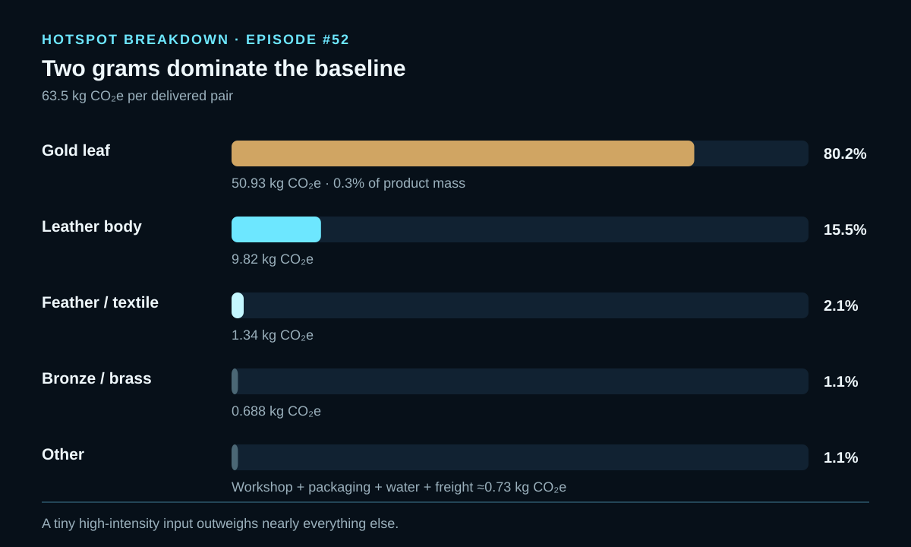

EPISODE #52 · MYTHS & LEGENDS
Hermes Sandals
How can two grams of gold dominate the footprint of an artifact built to be light enough for divine flight?
THE SUBJECT
A courier myth becomes engineered footwear.
The approved episode reconstructs Hermes’ talaria as one pair of leather sandals with bronze wing frames, pale feather vanes, a thin gold finish and small emerald inlays. The reference flow is 0.682 kg of product, rising to 0.862 kg when packed for delivery.
The myth defines the flying footwear and its courier function. The measurable reconstruction is deliberately physical: 270 mm soles, 95 mm width, 310 mm wing height, 0.180 kg of bronze/brass and only 2.0 g of gold leaf. The sandals are not modeled as solid gold because that would be structurally excessive and inconsistent with footwear-scale mass.
The system stops at the mythic delivery gate. Workshop energy, water, packaging and road/sea freight are counted. Divine propulsion is not converted into a fictional fuel: use-phase flight is stated explicitly as zero direct emissions.
Footwear scale
0.682 kg product mass; 270 mm sole length and 95 mm sole width.
Winged hardware
310 mm wing height, with bronze frames and feather/textile vanes.
Main hotspot
2.0 g of gold leaf contributes 50.93 kg CO₂e, or 80.2% of the baseline.
Boundary rule
Wear, repair, end-of-life and divine propulsion are excluded; flight is zero direct operational emissions.
VISUAL MODEL
From workshop inputs to delivered talaria
The visual model separates the lightweight physical artifact from the high-intensity precious-material proxy that controls the result.


LIFE CYCLE INVENTORY
A small mass with one outsized input
Activity data and named factors follow the approved carousel. Packaging and water are kept as a combined residual because their individual climate contributions are not separately disclosed in the source PDF.
| Stage | Component / activity | Activity data | Climate change | Modelling basis |
|---|---|---|---|---|
| Materials | Gold leaf | 0.002 kg | 50.93 kg CO₂e | Primary-gold external proxy: 25,463 kg CO₂e/kg. DEFRA 2026 has no representative gold factor. |
| Materials | Leather body | 0.440 kg | 9.82 kg CO₂e | DEFRA 2026 clothing-primary proxy: 22.310 kg CO₂e/kg. |
| Materials | Feather / textile vanes | 0.060 kg | 1.34 kg CO₂e | DEFRA 2026 clothing-primary proxy used for the lightweight wing vanes. |
| Materials | Bronze / brass frame and buckles | 0.180 kg | 0.688 kg CO₂e | DEFRA 2026 primary-metals factor: 3.822 kg CO₂e/kg. |
| Workshop | Electricity | 4.0 kWh | 0.590 kg CO₂e | DEFRA 2026 UK electricity use, 0.1475 kg CO₂e/kWh as reported in the approved episode. |
| Support | Packaging + water | 0.180 kg packaging + 0.02 m³ water | ≈0.110 kg CO₂e combined | DEFRA wood/paper and utilities. Combined contribution is the reconciled residual needed to preserve the approved 63.5 kg CO₂e total; the PDF does not disclose the split. |
| Logistics | Road + sea freight | 0.793 t·km total | 0.031 kg CO₂e | 120 km road (0.103 t·km) + 800 km sea (0.690 t·km); DEFRA freight with WTT as reported. |
Included
Leather, bronze/brass, feather/textile, gold leaf, workshop electricity and water, packaging, road freight and sea freight.
Excluded
Divine propulsion, Olympian maintenance, end-of-life and avoided travel are outside the approved model.
Cut-off event
The system ends when the packed sandals reach the mythic delivery gate.
Proxy disclosure
DEFRA 2026 is used first. Leather uses a clothing proxy; gold uses an external mining-intensity proxy.
HOTSPOT
Two grams bend the result
The largest mass is leather, but the highest-intensity input is gold. The contribution pattern is therefore controlled by material intensity rather than mass share.

Main result
63.5 kg CO₂e
Per delivered pair of winged talaria.
Gold hotspot
50.93 kg CO₂e · 80.2%
Only 0.3% of product mass controls most of the footprint.
Leather body
9.82 kg CO₂e · 15.5%
The main physical mass remains the second-largest contribution.
Logistics
0.031 kg CO₂e
Less than 0.1% of the modeled baseline.
Sensitivity A · gilding mass
0.5 g → 25.3 kg CO₂e
2.0 g → 63.5 kg CO₂e
5.0 g → 139.9 kg CO₂e
All non-gold flows remain fixed.
Sensitivity B · leather proxy
12.9 kg/kg → 59.3 kg CO₂e
22.31 kg/kg → 63.5 kg CO₂e
187.1 kg/kg → 136.0 kg CO₂e
Gold, mass, energy and logistics remain fixed.
Interpretation
The gold proxy determines the baseline hotspot, while leather-factor choice is the second-order modelling uncertainty. Both sensitivities are material, but neither changes the central lesson that a tiny high-intensity input can outweigh the rest of the artifact.
THE VERDICT
The smallest shine can carry the longest shadow. For Hermes’ sandals, the footprint is not controlled by the distance flown, but by two grams applied before the first step.